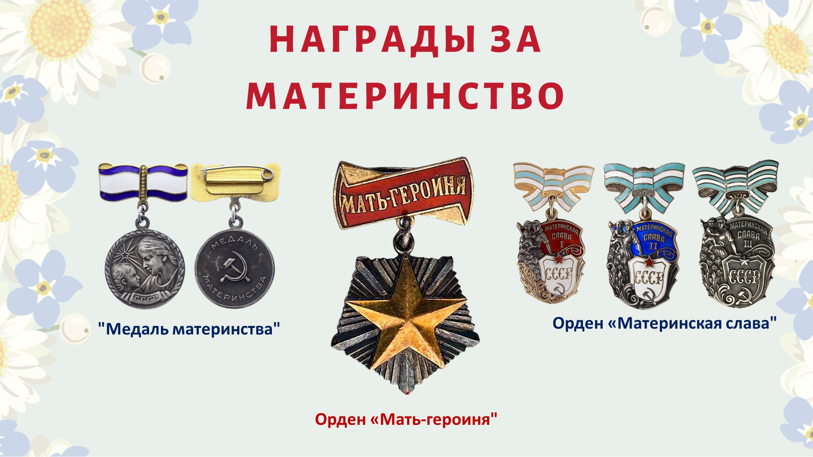
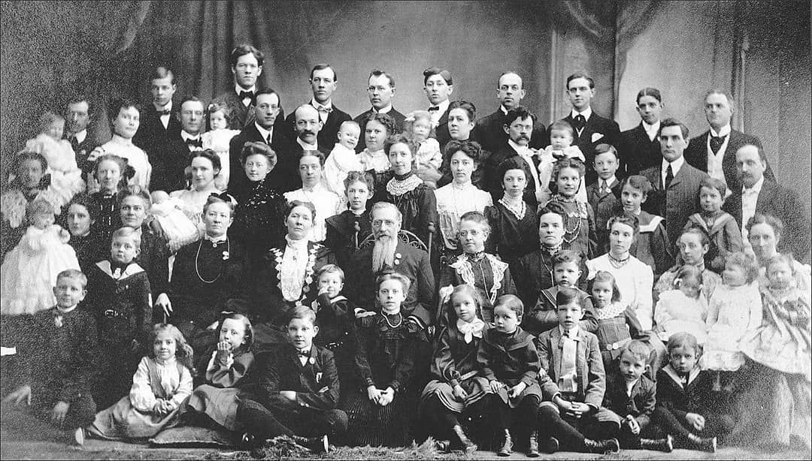

|
| Интересные факты |
|
1. Слово «мама» во многих языках звучит похоже. Считается, что оно происходит от звуков, которые издает ребенок.
|
2. В СССР существовали специальные награды для матерей. Медаль Материнства вручалась женщинам, родившим и воспитавшим 5 или 6 детей. Те, кто родил и воспитал 7, 8 или 9 детей,
удостаивались ордена «Материнская слава». А если детей 10 и более — положен орден и звание «Мать-героиня».
|

|
|  |
3. Сколько детей может родить одна женщина? Пока что рекорд — 69. Его в XVIII веке установила жена русского крестьянина Федора Васильева
— ее имя история не сохранила. Она рожала 27 раз: несколько раз были двойни, тройни и даже четыре ребенка одновременно.
Причем, несмотря на высокую детскую смертность, характерную для того времени, у этой семьи в младенчестве умерло только двое детей.
|
|
|